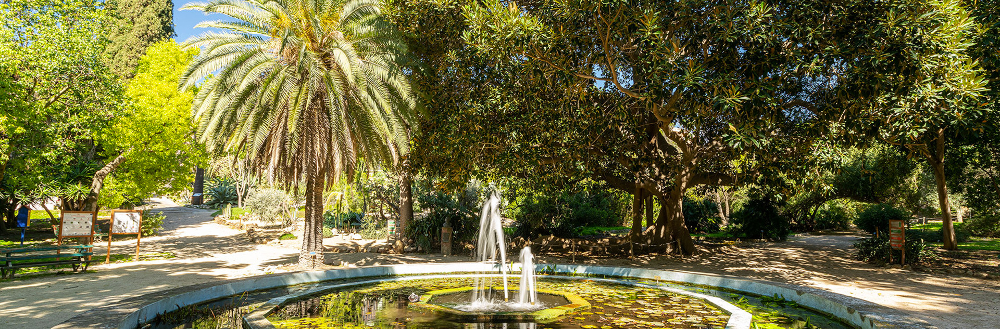

STAG 2022 will be held in Cagliari, in the Room "Mameli Calvino" inside the Botanical Garden. Opened in 1866, it contains about 2000 species, predominantly of Mediterranean origins, but with a good collection of succulents and tropical plants. The garden is divided into three main sections: (1) plants from the Mediterranean (vegetation from Sardinia, as well as the species coming from Australia, California and Chile), (2) succulent plants, and (3) tropical plants. All in all, the garden contains about 600 trees and 550 shrubs. Of particular merit is the area dedicated to the collection of palms (stretched for 4000 m2) with about 60 species of Euphorbia canariensis, with an extension of 100 m2. The garden area also has considerable archaeological importance because of the presence of tanks and wells from the Roman period.
The Botanical Garden is located in the heart of Cagliari, in "Viale S. Ignazio da Laconi, 9-11" [Google Maps link].

Cagliari is the most important city in Sardinia, with a metropolitan area of about half a million inhabitants. The capital of the island has a soul consisting of a millenary history, culture, nature, beach tourism, and nightlife, an attractive mix that fascinates the visitor, charmed by the views of Castello, the ramparts and the Roman remains, the Sardinian sea, as well as by the dynamism of a surprisingly lively city. You can find more information about Cagliari in the tourist Portal of the city.
The Cagliari International Airport "Mario Mameli" is widely connected to many cities in Italy, Europe, and the world. The airport is located close to the Cagliari city center. From the airport, it is possible to reach the Cagliari city center by bus, train, and taxi in 15-20 minutes.
Conference attendees are responsible for booking their own accommodation. There is a wide range of options in the Cagliari city center, but we have listed some options that might interest our guests. This is not an exhaustive list:
- Krly Studio Apartments
- Birkin Hotel
- Apart Hotel - Silver Room
- Apart Hotel - Gold Room
- Apart Hotel - Platinum Room
- Apart Hotel - Diamond Room